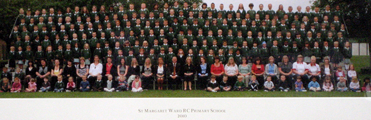
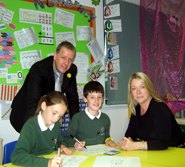

our school
|
our school
|
|
|
Bienvenue
à notre école
|
Witamy
w naszej szkole
|
|
Bienvenidos
en nuestra escuela
|
Benvenuti
alla nostra scuola
|
|
St
Margaret Ward Catholic Primary School
is a small, friendly school situated in Sale in the borough of Trafford.
We have about 200 children in the main school and 26 full time places
in our nursery.
|
|  |
| The emphasis in our school is on hard work and fun and there are always creative projects in the pipeline - just take a look at some of our recent school plays and concerts! | |
| For the three consecutive years that the scheme ran, we received a School Achievement Award from the DfES for excellent results in Key stage 2. |  |
|
Maths
Inspection 2011 |
 |
 |
Our whole school community was thrilled
with the outcome of the Ofsted
Inspection in June 2009 in which our school was once again judged
to be 'OUTSTANDING' :
|
|
|
Our
Headteacher Mr Ratchford said of the Ofsted inspection, "We are all delighted the inspectors recognised the efforts being made by everyone to make sure our pupils receive the best possible educational opportunities and experience." Chairman of Governors, Anne Risdon said:"This is the second consecutive 'Outstanding' Ofsted inspection for the school, which is excellent news. Results like this cannot be achieved without the hard work, commitment and determination of everyone, pupils, staff, governors and families, so I would like to congratulate everyone at the school." |
 |
| At
St Margaret Ward we feel that education is a partnership between home
and the school, with the child as the focus of attention. We make our
school environment warm and welcoming so that the children feel safe and
secure and this was recognised in the inspection: |
|
The school
takes exceptionally good care of pupils, promotes excellent personal well-being
and development. Good quality support for pupils with learning difficulties and/or disabilities means they achieve well and the school's care, guidance and support for pupils is outstanding. |
|
Each year during the summer term our
Yr 5 and 6 children enjoy a residential activity holiday and as you
can see from our school
trips and activities all of our children are given the opportunity
to visit a wide variety of locations.
|
| Our Friends of St Margaret Ward group organise regular fund raising activities throughout the year and a warm welcome is always extended to our Visitors. Our whole school community benefits from the numerous building projects that have greatly enhanced our school over the last decade.We now have a quality environment for all learning and will continue to seek ways to develop and improve still further in the future. |
|
Our
children were recently asked to write their thoughts on why their school
is special and this is a compilation of their comments- St Margaret Ward is a very special place. Although the building is lovely, what's inside it is even better and that's what makes it special. Inside it you will find; love, fun, laughter, hard work,friends. Because we are a small school we are a family together; we learn together, we play together, we laugh together, we support each other. We know everyone in our school and everyone knows each of us. All those who work in our school are special people and we are proud of everyone. Everybody here works hard to make sure that we all have a good time in all areas of our school life. There is no other place like St Margaret Ward. We all work hard to make sure it is a great place to come to each day and we are very proud of the great things we achieve. |
 |
| The teachings of Jesus are the inspiration for all that we do here and we try to ensure that each member of our community feels loved, cared for and valued for himself or herself. |
|
Our Mission Statement At St Margaret Ward we are all special and we want to grow to be good and kind people. We try to do our best in everything, just as Jesus showed us.
|
Home *Foundation * School calendar
* Fun page * Friends
* Recent events * Sports
* Gallery * Parish
* Parents Page